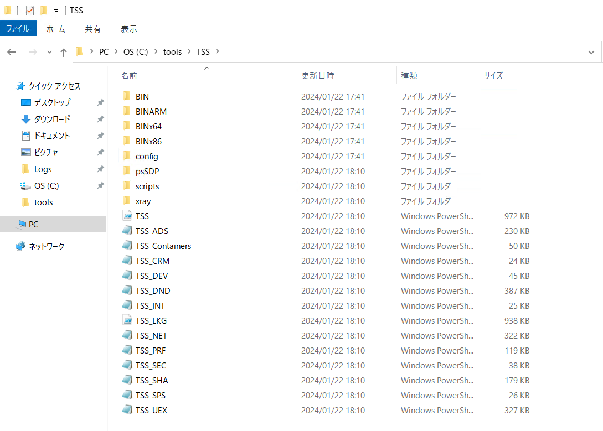
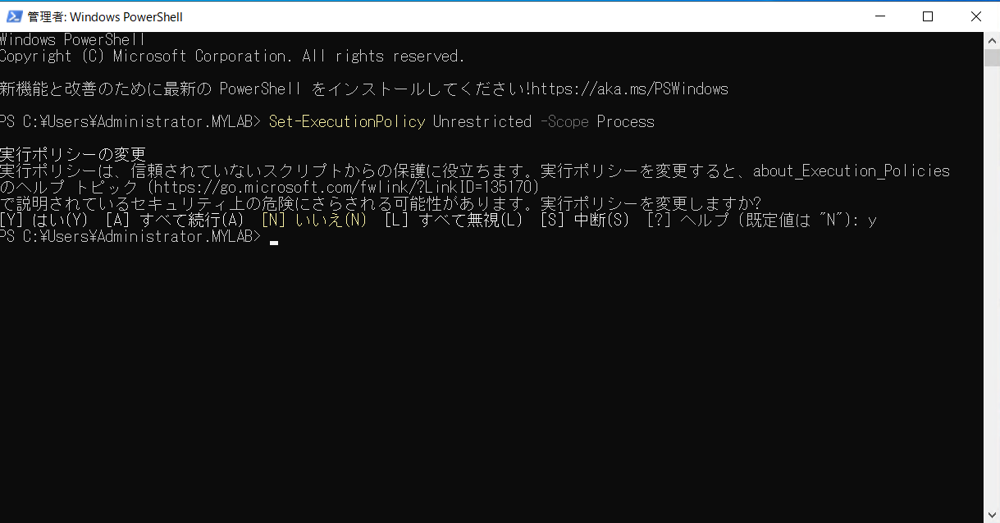
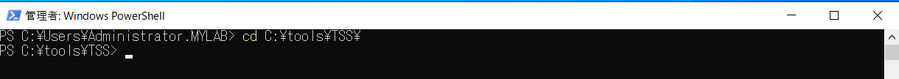
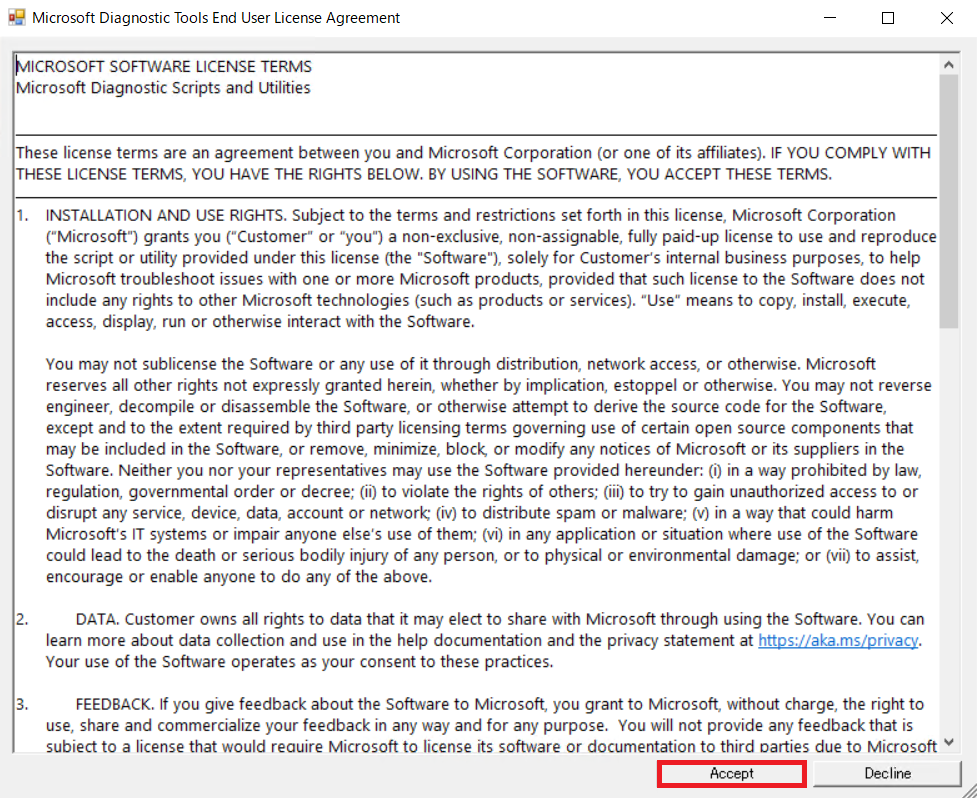
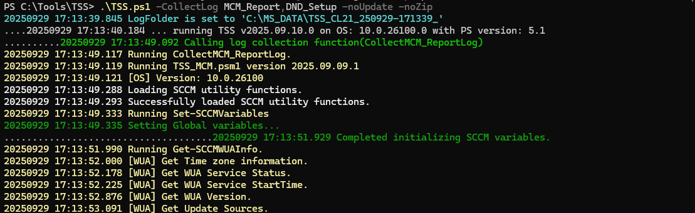
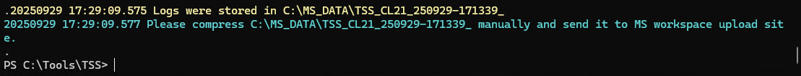
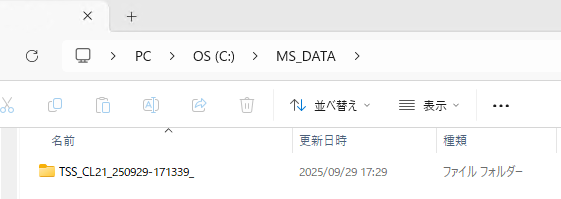
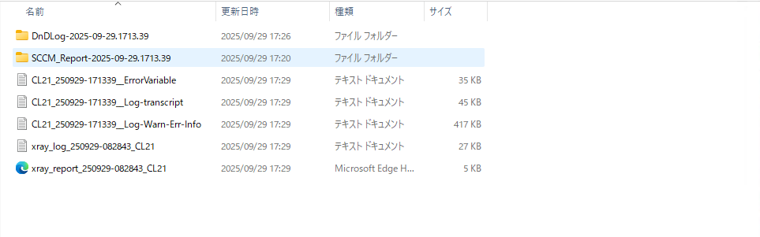

OS 更新プログラム適用失敗時の初期資料採取手順
OS 更新プログラム適用失敗時、ConfigMgr / WSUS 環境、および Windows 環境の OS 更新関連資料を採取するために TSS (Trouble Shooting Script) による資料採取をお願いさせていただいております。
調査に必要なシステム情報やイベント ログ等の各種情報を、自動で採取可能なスクリプト ファイルにより採取します。
(情報採取に伴うシャットダウンや再起動は行われません)。
後述の手順で TSS.ps1 を実行し、出力された フォルダをアーカイブ化して弊社までお寄せくださいますようお願いいたします。
なお、下記でご案内している手順 では 性能解析や ネットワーク 解析のための資料は採取しておりません。そのような解析が必要な場合は担当者より採取手順を別途ご案内しますので、ご承知置きくださいますようお願い致します。
TSS による資料採取手順
以下の URL にアクセスし、TSS.zip をダウンロードします。
複製したファイルを端末上の任意のパスに展開します。
※以下は展開例です。
Windows PowerShell を管理者として起動します。

起動した PowerShell コンソールで以下のコマンドを実行し、PowerShell スクリプトを実行できるように、実行ポリシーを変更します。なお、本実行ポリシーは開いた Powershell コンソール内のみで有効となります。
1 | Set-ExecutionPolicy Unrestricted -Scope Process |

- TSS.zip を展開したフォルダーに移動します。
1 | cd [TSS 展開先] |

- 以下のコマンドを入力し、資料採取を開始します。
1 | .\TSS.ps1 -CollectLog MCM_Report,DND_Setup -noUpdate -noZip |
使用許諾の確認が以下のように表示される場合は内容をご承諾頂いた上で [Accept] ボタンをクリックし同意頂きますようお願い致します。

資料は標準では C:\MS_DATA フォルダに保存されます。 保存先を変更されたい場合は、下記のように -LogFolderPath オプションを付与ください。
1
.\TSS.ps1 -CollectLog MCM_Report,DND_Setup -noUpdate -noZip -LogFolderPath D:\MS_DATA
資料採取が始まりますので終了まで待ちます。

“Please compress [フォルダ名] manually and send it to MS workspace upload site.” と表示され、Powershell ウィンドウの操作が戻ってきたら収集完了です。

採取した資料が 標準では以下のように [出力フォルダ指定先]\TSS_[ホスト名]YYMMdd-HHmmss というフォルダ配下に作成されますので、フォルダをアーカイブ化して弊社までお寄せください。

参考までにフォルダの内容は以下のようになります。

採取に失敗した場合
お客様の環境によっては本スクリプトが正常に動作しない場合がございます。お手数をおかけして恐縮でございますが、その旨ご連絡ください。
TSS に関する FAQ
TSS に関してよく頂くご質問について、下記にまとめておりますので適宜ご参照ください。(弊社 Windows サポートチーム 資料採取案内ページへのリンクとなっております)
上記以外でよくご質問いただく内容としては以下です。
- 本 PowerShell スクリプトは、関連ログファイルや、レジストリ ハイブを収集するものです。ファイルの大きさによっては CPU 負荷、I/O 負荷がかかるケースがございますため、実行の際にはサービス影響の少ない時間帯に実施いただけますよう、お願い申し上げます。
- 環境差がございますが通常は 15 ～ 20 分程度で情報取得は完了します。もし、時間が経っても終わらない場合はいったん PowerShell を閉じるなどして中断してください。
- 多くの OS バージョンに対して、汎用的に対応できるよう実装している関係上、環境によって、エラーが出力されるケースが想定されますが、原則、無視いただいても、問題はございません。
- 採取する過程で、一部サービス (usosvc/wuauserv/dosvc) を停止しています。これらサービスは Windows Update に関連するサービスであるため、更新プログラムのダウンロード、適用処理中でない場合は影響を受けず、停止後、必要応じて、再起動される動作となっておりますため、問題はございません。